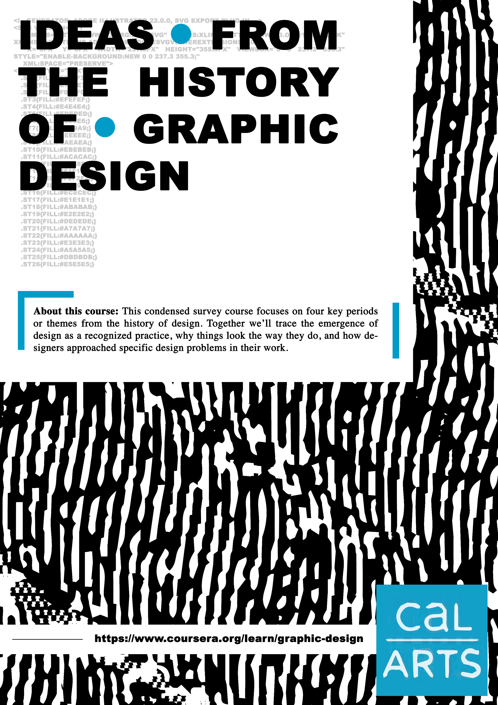
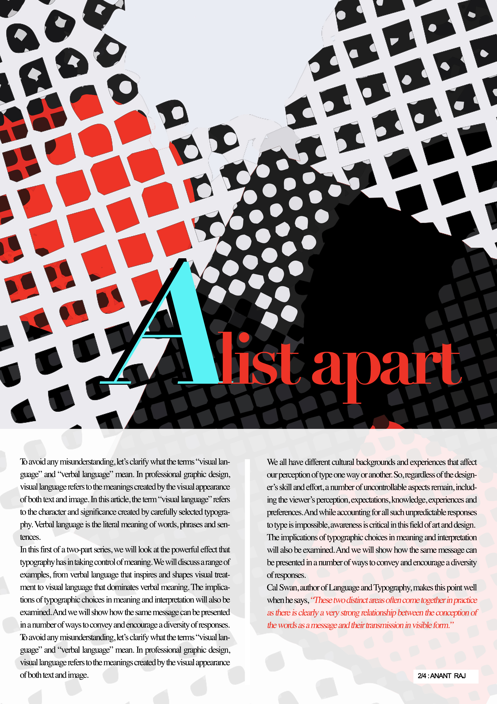
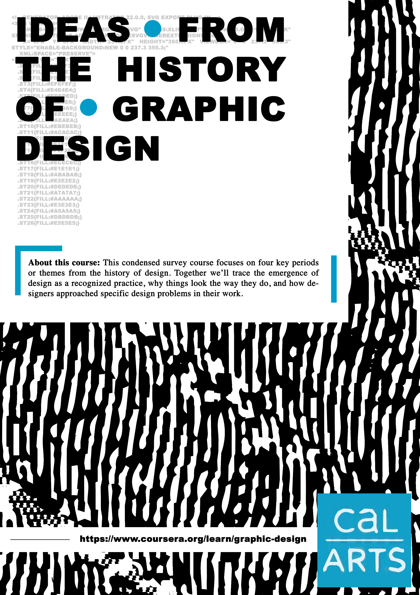
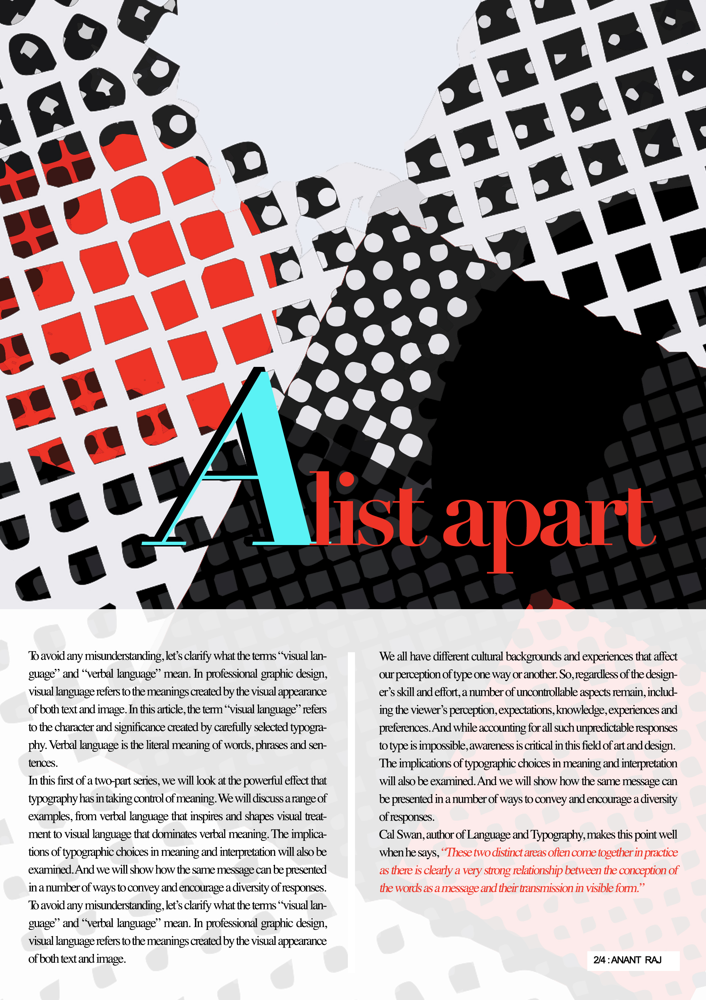
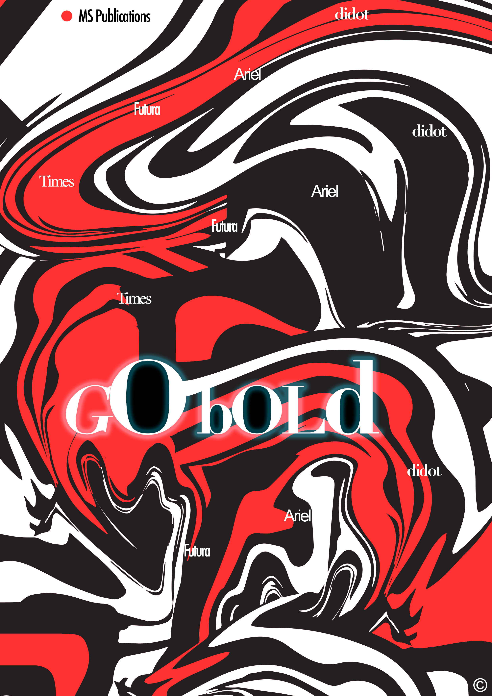
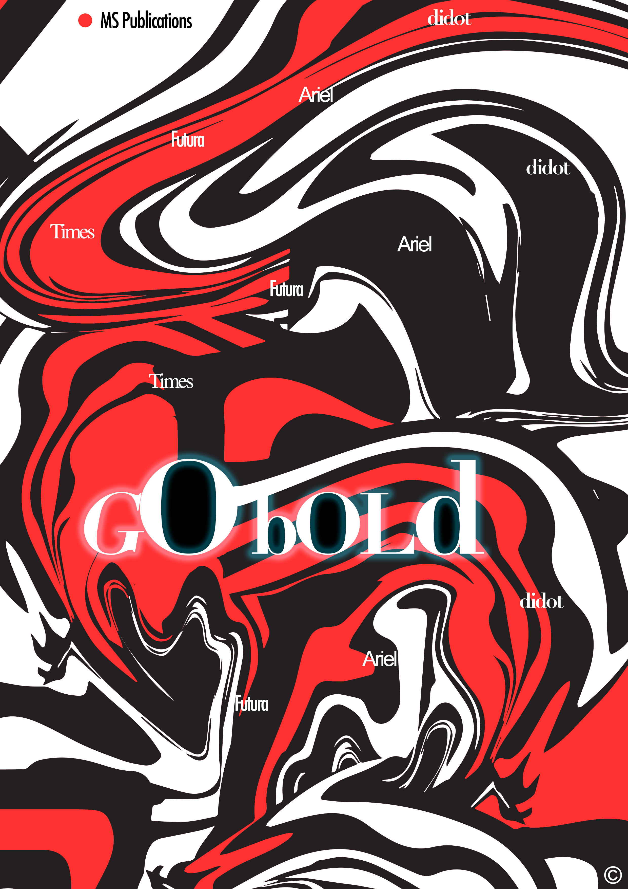

A deep desire to convey aesthetics and functionality through design.
A deep desire to convey aesthetics and functionality through design.

Minimalism and Simplicity.

Something new. Every day.
Madhura Sekar - Graphic Designer
My projects
 




 
